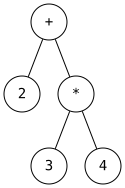
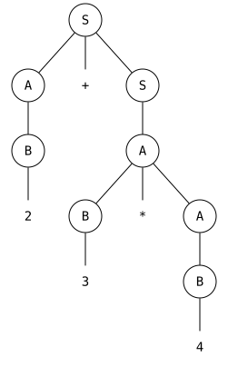

8 Parsing
Parsing takes the output of lexical analysis (tokens) and builds an Abstract Syntax Tree (AST).
8.1 Lexing
Lexing is the process of converting a program’s textual input into a sequence of tokens. The component that performs this task is called a lexer, tokenizer, or scanner, and the process itself is often referred to as scanning. The tokens produced by the lexer correspond to the terminals of the parser’s context-free grammar (CFG), such as keywords, identifiers, numeric literals, and punctuation symbols. During this stage, the lexer typically ignores or discards whitespace and comments, as they are not needed for syntactic analysis.
For example, consider a simple expression language with only integers and addition. We define the token type:
type token =
Tok_Num of char (* represents a single digit number *)
| Tok_Add (* represents + *)
| Tok_END (* end of token list *)The tokenizer splits an input string into a list of tokens:
tokenize "1 + 2" = [Tok_Num '1'; Tok_Add; Tok_Num '2'; Tok_END]8.1.1 Implementing a Lexer
OCaml REPL
type token = Tok_Num of char | Tok_Add | Tok_Mult | Tok_END;; let tokenize (str:string) = (* returns token list *) let re_num = Str.regexp "[0-9]" in (* single digit *) let re_add = Str.regexp "[+]" in let re_mul = Str.regexp "[*]" in let rec tok pos s = if pos >= String.length s then [Tok_END] else if (Str.string_match re_num s pos) then let token = Str.matched_string s in (Tok_Num token.[0])::(tok (pos+1) s) else if (Str.string_match re_add s pos) then Tok_Add::(tok (pos+1) s) else if (Str.string_match re_mul s pos) then Tok_Mult::(tok (pos+1) s) else raise (Failure "tokenize") in tok 0 str;; tokenize "1+2*3";; [Output] type token = Tok_Num of char | Tok_Add | Tok_Mult | Tok_END val tokenize : string -> token list = <fun> - : token list = [Tok_Num '1'; Tok_Add; Tok_Num '2'; Tok_Mult; Tok_Num '3'; Tok_END]
8.2 Parsing to an AST
A parser takes a list of tokens, verifies that they conform to a grammar, and builds an Abstract Syntax Tree (AST). Once we have the AST, we can optimize, evaluate, or generate machine code.
For example, given a context-free grammar and input string "2+3*4"
S -> A + S | A
A -> B * A | B
B -> 0 | 1 | ... | 9[Tok_Num '2'; Tok_Add; Tok_Num '3'; Tok_Mult; Tok_Num '4'; Tok_END]
For a language with numbers, addition, and multiplication, we extend the token type and define the AST type:
type token =
Tok_Num of char
| Tok_Add
| Tok_Mult
| Tok_END
type expr =
Num of int
| Add of expr * expr
| Mult of expr * exprFor example:
let tokens = tokenize "2+3*4";;
tokens = [Tok_Num '2'; Tok_Add; Tok_Num '3'; Tok_Mult; Tok_Num '4'; Tok_END]
parse tokens;;
expr = Add (Num 2, Mult (Num 3, Num 4))The resulting AST for 2+3*4 has + at the root, with 2 as the left child and a * node (with children 3 and 4) as the right child.
8.3 Recursive Descent Parsing
There are many efficient techniques for parsing, including LL(k), SLR(k), LR(k), and LALR(k). We will study these in more detail in CMSC 430.
In practice, parsers are often generated using tools called parser generators, such as Yacc, Bison, ANTLR, and LALRPOP. In this lecture, however, we will focus on the recursive descent parser, a simple parsing technique that can be implemented manually.
Begin with the start symbol S and the sequence of input tokens t
Repeat: rewrite the leftmost nonterminal and consume tokens via a production in the grammar.
Until all tokens are matched, or parsing fails
For the grammar:
S -> A + S | A
A -> B * A | B
B -> 0 | 1 | ... | 98.3.1 Parsing Example
For the grammar above and input 2+3*4, the parse tree is:

This tree correctly encodes that * has higher precedence than + because A handles multiplication and S handles addition.
8.3.2 Parser Helper Functions
Two helper functions are used throughout a recursive descent parser:
lookahead — peeks at the next token without consuming it:
let lookahead tokens =
match tokens with
| [] -> raise (ParseError "no tokens")
| (h::t) -> hmatch_token — consumes the next token if it matches the expected token, raises an exception otherwise:
let match_token tokens token =
match tokens with
| [] -> raise Exception
| h :: t when h = token -> t
| h :: _ -> raise ExceptionQuiz 1: What is the value of x?
let tokens =
[Tok_Num '2'; Tok_Add; Tok_Num '3'; Tok_END]
let x = lookahead tokens
Quiz 1: What is the value of x?
let tokens =
[Tok_Num '2'; Tok_Add; Tok_Num '3'; Tok_END]
let x = lookahead tokensAnswer: Tok_Num ’2’. lookahead returns the head of the token list without consuming it.
Quiz 2: What is the value of x?
let tokens =
[Tok_Num '2'; Tok_Add; Tok_Num '3'; Tok_END]
let x = match_token tokens Tok_Add
Quiz 2: What is the value of x?
let tokens =
[Tok_Num '2'; Tok_Add; Tok_Num '3'; Tok_END]
let x = match_token tokens Tok_AddAnswer: raise Exception. The head of tokens is Tok_Num ’2’, which does not match Tok_Add, so match_token raises an exception.
Quiz 3: What is the value of x?
let tokens =
[Tok_Num '2'; Tok_Add; Tok_Num '3'; Tok_END]
let x = match_token tokens (Tok_Num '2')
Quiz 3: What is the value of x?
let tokens =
[Tok_Num '2'; Tok_Add; Tok_Num '3'; Tok_END]
let x = match_token tokens (Tok_Num '2')Answer: [Tok_Add; Tok_Num ’3’; Tok_END]. The head Tok_Num ’2’ matches, so match_token consumes it and returns the remainder of the list.
8.3.3 Building the Recursive Descent Parser
A recursive descent parser is a top-down parsing technique in which the parser is written as a set of mutually recursive functions, one for each nonterminal in the grammar.
Each function tries to recognize the part of the input that corresponds to its grammar rule. The parser starts from the start symbol and recursively expands nonterminals while reading tokens from left to right.
8.3.4 Basic Idea
E → T + E | TCalls parse_T to parse the first part.
Checks whether the next token is +.
If so, consumes + and recursively parses another E.
Backtracking — choose some production; if it fails, try a different one; parse fails only if all choices fail
Predictive parsing (what we use here) — use the lookahead token to decide which production to select; parse fails immediately if the lookahead does not match any production
Predictive parsing is efficient but requires that the grammar be designed so that the lookahead unambiguously determines which production to apply.
For all terminals, use match_token a: if the lookahead is a, it consumes the lookahead by advancing to the next token and returns; fails with a parse error if lookahead is not a
For each nonterminal N, create a function parse_N: called when parsing a part of the input that corresponds to (or can be derived from) N; parse_S for the start symbol begins the whole parse
Given grammar:
S → xyz | abc
let parse_S () =
if lookahead () = "x" then (* S → xyz *)
(match_tok "x";
match_tok "y";
match_tok "z")
else if lookahead () = "a" then (* S → abc *)
(match_tok "a";
match_tok "b";
match_tok "c")
else raise (ParseError "parse_S")8.3.5 Expression Parser
Now, we will implement an expression parser that can parse expressions such as "2 + 3 * 4" using the grammar:
S -> A + S | A
A -> B * A | B
B -> 0 | 1 |... | 9Each nonterminal corresponds to a parsing function that takes a token list, parses it, and returns a tuple of (expr, remaining_tokens).
8.3.6 Parsing S
parse_S implements S -> A + S | A. It first parses an A, then checks whether the next token is Tok_Add. If so, it matches the + and recursively parses another S:
let rec parse_S tokens =
let e1, t1 = parse_A tokens in
match lookahead t1 with
| Tok_Add -> (* S -> A Tok_Add S *)
let t2 = match_token t1 Tok_Add in
let e2, t3 = parse_S t2 in
(Add (e1, e2), t3)
| _ -> (e1, t1) (* S -> A *)8.3.7 Parsing A
parse_A implements A -> B * A | B. It first parses a B, then checks whether the next token is Tok_Mult. If so, it matches the * and recursively parses another A:
and parse_A tokens =
let e1, tokens = parse_B tokens in
match lookahead tokens with
| Tok_Mult -> (* A -> B Tok_Mult A *)
let t2 = match_token tokens Tok_Mult in
let e2, t3 = parse_A t2 in
(Mult (e1, e2), t3)
| _ -> (e1, tokens)8.3.8 Parsing B
parse_B handles the base case: a single digit number.
and parse_B tokens =
match lookahead tokens with
| Tok_Num c -> (* B -> Tok_Num *)
let t = match_token tokens (Tok_Num c) in
(Num (int_of_string c), t)
| _ -> raise (ParseError "parse_B")Quiz 4: What does the following code parse?
let parse_S () =
if lookahead () = "a" then
(match_tok "a";
match_tok "x";
match_tok "y";
match_tok "q")
else
raise (ParseError "parse_S")
Quiz 4: What does the following code parse?
let parse_S () =
if lookahead () = "a" then
(match_tok "a";
match_tok "x";
match_tok "y";
match_tok "q")
else
raise (ParseError "parse_S")Answer: S → axyq. The parser matches tokens "a", "x", "y", "q" in sequence, so the only string it accepts is axyq.
Quiz 5: What does the following code parse?
let rec parse_S () =
if lookahead () = "a" then
(match_tok "a";
parse_S ())
else if lookahead () = "q" then
(match_tok "q";
match_tok "p")
else
raise (ParseError "parse_S")
Quiz 5: What does the following code parse?
let rec parse_S () =
if lookahead () = "a" then
(match_tok "a";
parse_S ())
else if lookahead () = "q" then
(match_tok "q";
match_tok "p")
else
raise (ParseError "parse_S")Answer: S → aS | qp. When the lookahead is "a", the parser consumes "a" and recurses; when it is "q", it consumes "q" then "p", matching the grammar S → aS | qp.
Quiz 6: Can recursive descent parse this grammar?
S → aBa
B → bC
C → ε | Cc
Quiz 6: Can recursive descent parse this grammar?
S → aBa
B → bC
C → ε | CcAnswer: No. The grammar contains a left-recursive production C → Cc, where C can derive a sentential form beginning with itself. Recursive descent parsers cannot handle left recursion because they would loop infinitely.
8.4 A Simple Expression Parser: Full Implementation
(* expr : user-defined variant datatype for arithmetic expressions *) type expr = | Num of int | Add of expr * expr | Sub of expr * expr | Mult of expr * expr (* function a_to_str : arith -> string converts arithmetic expression into a string *) let rec expr_to_str a = match a with | Num n -> string_of_int n (* from Pervasives *) | Add (a1, a2) -> "(" ^ expr_to_str a1 ^ " + " ^ expr_to_str a2 ^ ")" | Sub (a1, a2) -> "(" ^ expr_to_str a1 ^ " - " ^ expr_to_str a2 ^ ")" | Mult (a1, a2) -> "(" ^ expr_to_str a1 ^ " * " ^ expr_to_str a2 ^ ")" (* finds value of arithmetic expression. always returns (Num n) *) let rec eval e = match e with | Num n -> n | Add (a1, a2) -> ( match (eval a1, eval a2) with n1, n2 -> n1 + n2) | Sub (a1, a2) -> ( match (eval a1, eval a2) with n1, n2 -> n1 - n2) | Mult (a1, a2) -> ( match (eval a1, eval a2) with n1, n2 -> n1 * n2) exception IllegalExpression of string exception ParseError of string (* Scanner *) type token = | Tok_Num of string | Tok_Add | Tok_Sub | Tok_Mult | Tok_LParen | Tok_RParen | Tok_END (*---------------------------------------------------------- function tokenize : string -> token list converts string into a list of tokens *) let tokenize str = let re_num = Str.regexp "[0-9]+" in (* single digit number *) let re_add = Str.regexp "+" in let re_sub = Str.regexp "-" in let re_mult = Str.regexp "*" in let re_lparen = Str.regexp "(" in let re_rparen = Str.regexp ")" in let re_space = Str.regexp " " in let rec tok pos s = if pos >= String.length s then [ Tok_END ] else if Str.string_match re_num s pos then let token = Str.matched_string s in let len = String.length token in Tok_Num token :: tok (pos + len) s else if Str.string_match re_space s pos then tok (pos + 1) s else if Str.string_match re_add s pos then Tok_Add :: tok (pos + 1) s else if Str.string_match re_sub s pos then Tok_Sub :: tok (pos + 1) s else if Str.string_match re_mult s pos then Tok_Mult :: tok (pos + 1) s else if Str.string_match re_lparen s pos then Tok_LParen :: tok (pos + 1) s else if Str.string_match re_rparen s pos then Tok_RParen :: tok (pos + 1) s else raise (IllegalExpression "tokenize") in tok 0 str (* function tok_to_str : token -> string converts token into a string *) let string1_of_token t = match t with | Tok_Num v -> "Tok_Num " ^ v | Tok_Add -> "Tok_Add" | Tok_Sub -> "Tok_Sub" | Tok_Mult -> "Tok_Mult" | Tok_LParen -> "Tok_LParen" | Tok_RParen -> "Tok_RParen" | Tok_END -> "END" let string2_of_token t = match t with | Tok_Num v -> v (*(Char.escaped v)*) | Tok_Add -> "+" | Tok_Sub -> "-" | Tok_Mult -> "*" | Tok_LParen -> "(" | Tok_RParen -> ")" | Tok_END -> "END" (* Parser *) (* function lookahead : token list -> (token * token list) Returns tuple of head of token list & tail of token list *) let lookahead tokens = match tokens with [] -> raise (ParseError "no tokens") | h :: t -> h let match_token (toks : token list) (tok : token) = match toks with | [] -> raise (ParseError (string1_of_token tok)) | h :: t when h = tok -> t | h :: _ -> raise (ParseError (string1_of_token tok)) (* recursive descent parser Returns tuple of ast & token list for remainder of string Arithmetic expression grammar: S -> A + S | A - S| A A -> B * A | B B -> n | (S) [Basic grammar withtokens] S -> A Tok_Add S | A A A -> B Tok_Mult A | B B -> Tok_Num | Tok_LParen S Tok_RParen *) let rec parse_S tokens = let e1, t1 = parse_A tokens in match lookahead t1 with | Tok_Add -> (* S -> A Tok_Add E *) let t2 = match_token t1 Tok_Add in let e2, t3 = parse_S t2 in (Add (e1, e2), t3) | Tok_Sub -> (* S -> A Tok_Add E *) let t2 = match_token t1 Tok_Sub in let e2, t3 = parse_S t2 in (Sub (e1, e2), t3) | _ -> (e1, t1) (* S -> A *) and parse_A tokens = let e1, tokens = parse_B tokens in match lookahead tokens with | Tok_Mult -> (* A -> B Tok_Mult A *) let t2 = match_token tokens Tok_Mult in let e2, t3 = parse_A t2 in (Mult (e1, e2), t3) | _ -> (e1, tokens) and parse_B tokens = match lookahead tokens with (* B -> Tok_Num *) | Tok_Num c -> let t = match_token tokens (Tok_Num c) in (Num (int_of_string c), t) (* B -> Tok_LParen E Tok_RParen *) | Tok_LParen -> let t = match_token tokens Tok_LParen in let e2, t2 = parse_S t in let _ = Printf.printf "%s\n" (string1_of_token (lookahead tokens)) in if lookahead t2 = Tok_RParen then (e2, match_token t2 Tok_RParen) else raise (ParseError "parse_B 1") | _ -> raise (ParseError "parse_B 2") (* function eval_str : given string, parse string, build AST, evaluate value of AST *) let pp = Printf.printf (* function eval_str : given string, parse string, build AST, evaluate value of AST *) let eval_str str = let tokens = tokenize str in pp "Input token list = ["; List.iter (fun x -> pp "%s;" (string1_of_token x)) tokens; pp "]\n"; let a, t = parse_S tokens in if t <> [ Tok_END ] then raise (IllegalExpression "parse_S"); pp "AST produced = %s\n" (expr_to_str a); let v = eval a in pp "Value of AST = %d\n" v ;; Printf.printf "\nExample 1:\n";; eval_str "1*2*3-4*5*6";; Printf.printf "\nExample 2:\n";; eval_str "1+2+3*4*5+6";; Printf.printf "\nExample 3:\n";; eval_str "1+(2+3)*4*5+6";; Printf.printf "\nExample 4:\n";; eval_str "100 * (10 + 20)" (* eval_str "(2^5)*2";; error *) (* eval_str "1++12" error *)
shell
> utop -require str parser_add_mul.ml Example 1: Input token list = [Tok_Num 1;Tok_Mult;Tok_Num 2;Tok_Mult;Tok_Num 3;Tok_Sub;Tok_Num 4;Tok_Mult;Tok_Num 5;Tok_Mult;Tok_Num 6;END;] AST produced = ((1 * (2 * 3)) - (4 * (5 * 6))) Value of AST = -114 Example 2: Input token list = [Tok_Num 1;Tok_Add;Tok_Num 2;Tok_Add;Tok_Num 3;Tok_Mult;Tok_Num 4;Tok_Mult;Tok_Num 5;Tok_Add;Tok_Num 6;END;] AST produced = (1 + (2 + ((3 * (4 * 5)) + 6))) Value of AST = 69 Example 3: Input token list = [Tok_Num 1;Tok_Add;Tok_LParen;Tok_Num 2;Tok_Add;Tok_Num 3;Tok_RParen;Tok_Mult;Tok_Num 4;Tok_Mult;Tok_Num 5;Tok_Add;Tok_Num 6;END;] Tok_LParen AST produced = (1 + (((2 + 3) * (4 * 5)) + 6)) Value of AST = 107 Example 4: Input token list = [Tok_Num 100;Tok_Mult;Tok_LParen;Tok_Num 10;Tok_Add;Tok_Num 20;Tok_RParen;END;] Tok_LParen AST produced = (100 * (10 + 20)) Value of AST = 3000
8.5 Parsing Example: 0*1*
(* Recursive Descent Parser for a*b* S -> AB A-> 0A | Epsilon B-> 1B | Epsilon *) exception ParseError of string (* string -> char list *) let explode s = let rec exp i lst = if i < 0 then lst else exp (i - 1) (s.[i] :: lst) in exp (String.length s - 1) [] (* string -> char list *) let tokenize s = explode s let lookahead tokens = match tokens with [] -> raise (ParseError "no tokens") | h::_ -> h let match_tok a tokens = match tokens with | h::t when a = h -> t | _ -> raise (ParseError "bad match") (* type ast = S of char | A of char | B of char | Epsilon *) let rec parse_S tokens = let t = lookahead tokens in match t with '0' ->let _= Printf.printf "S->AB\n" in let t1 = parse_A tokens in parse_B t1 |'1' -> let _= Printf.printf "S->B\n" in parse_B tokens |_->tokens and parse_A tokens = let t = lookahead tokens in match t with '0' -> let tokens = let _= Printf.printf "A->0A\n" in match_tok '0' tokens in let tokens = parse_A tokens in tokens |_-> let _= Printf.printf "A->e\n" in tokens and parse_B tokens = let t = lookahead tokens in match t with '1' -> let tokens = let _= Printf.printf "B->1B\n" in match_tok '1' tokens in let tokens = parse_B tokens in tokens |_-> let _= Printf.printf "B->e\n" in tokens let p s = let _= Printf.printf "Derivation for string %s\n" s in let s = s ^ "_" in let tokens = tokenize s in let t = (parse_S tokens) in if t = ['_'] then Printf.printf "S -> %s Success\n" s else Printf.printf "Parse Error!\n" let _= p "00111" (* success *) let _= p "011110" (* ParseErrror *)
shell
> utop -require str parse_ab.ml Derivation for string 00111 S->AB A->0A A->0A A->e B->1B B->1B B->1B B->e S -> 00111_ Success Derivation for string 011110 S->AB A->0A A->e B->1B B->1B B->1B B->1B B->e Parse Error!
8.6 Parsing Example: Palindrome
(* Parser for palindromes that have x in the center Recursive Descent Parser for S -> aSa | bSb|x *) exception ParseError of string (* string -> char list *) let explode s = let rec exp i lst = if i < 0 then lst else exp (i - 1) (s.[i] :: lst) in exp (String.length s - 1) [] (* string -> char list *) let tokenize s = explode s let lookahead tokens = match tokens with [] -> raise (ParseError "no tokens") | h::_ -> h let match_tok a tokens = match tokens with | h::t when a = h -> t | _ -> raise (ParseError "bad match") let rec parse_S tokens = let t = lookahead tokens in match t with 'a' ->let _= Printf.printf "S->aSa\n" in let tokens = match_tok 'a' tokens in let tokens = parse_S tokens in let tokens = match_tok 'a' tokens in tokens |'b' ->let _= Printf.printf "S->bSb\n" in let tokens = match_tok 'b' tokens in let tokens = parse_S tokens in let tokens = match_tok 'b' tokens in tokens |'x'-> let _= Printf.printf "S->x\n" in match_tok 'x' tokens |_->failwith "wrong token. parse error" let p s = let _= Printf.printf "Derivation for string %s\n" s in let tokens = tokenize s in let t = (parse_S tokens) in if t = [] then Printf.printf "Success\n" else raise (ParseError "parse error") let _= p "bbaaxaabb" (* success *)
shell
> utop -require str parse_palindrome.ml Derivation for string bbaaxaabb S->bSb S->bSb S->aSa S->aSa S->x Success
8.7 Limitations of Recursive Descent Parser
A recursive descent parser cannot handle left-recursive grammars. A grammar is left-recursive if a nonterminal can derive a sentential form that begins with itself, either directly or indirectly.
E → E + T E → T T → int
When parsing E, the parser calls parse_E, which immediately tries to match production E → E + T by calling parse_E again — before consuming any input. This causes infinite recursion and the parser loops forever.
Eliminating Left Recursion
To fix this, we rewrite the grammar to be right-recursive by introducing a new helper nonterminal (often written with a prime, e.g. E’).
The general transformation for direct left recursion is:
A → A α becomes: A → β A'
A → β A' → α A' | εWhere β is any production that does not start with A, and α is the suffix after the recursive A.
Applying the transformation to our example:
Original (left-recursive):
E → E + T | TApplying the rule above, where α = + T and β = T (the base/non-recursive case):
E → T E'
E' → + T E' | εTransformed (right-recursive):
E → T E'
E' → + T E'
E' → εNow parsing E first matches a T (consuming input), then calls parse_E’, which either matches + T E’ or the empty string — no infinite loop.
Note that eliminating left recursion preserves the language of the grammar but changes its associativity: the original left-recursive grammar produces left-associative trees naturally, while the right-recursive version produces right-associative parse trees that must be corrected during AST construction.
8.8 Summary
The scanner (lexer) converts source text into a list of tokens using regular expressions; whitespace is discarded
The parser takes the token list and builds an AST using a CFG
A Recursive Descent Parser implements one function per nonterminal, using lookahead to predict which production to apply and match_token to consume terminals
lookahead peeks at the next token; match_token consumes a token or raises a parse error
Predictive parsing selects productions based on the lookahead token, avoiding backtracking